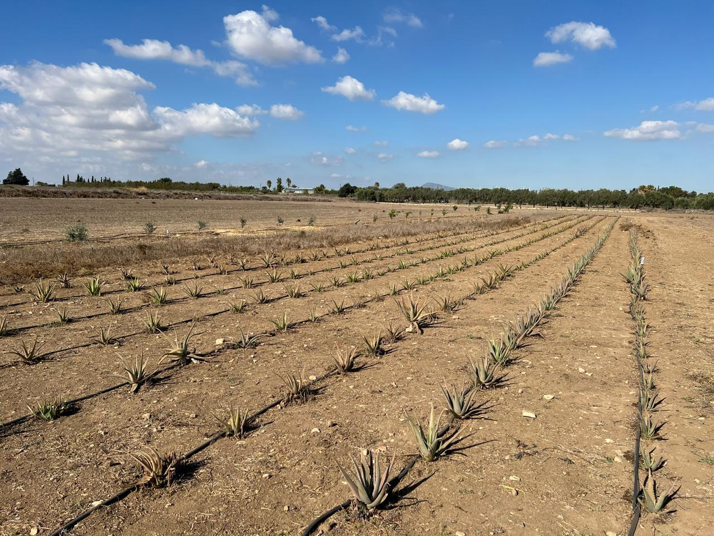
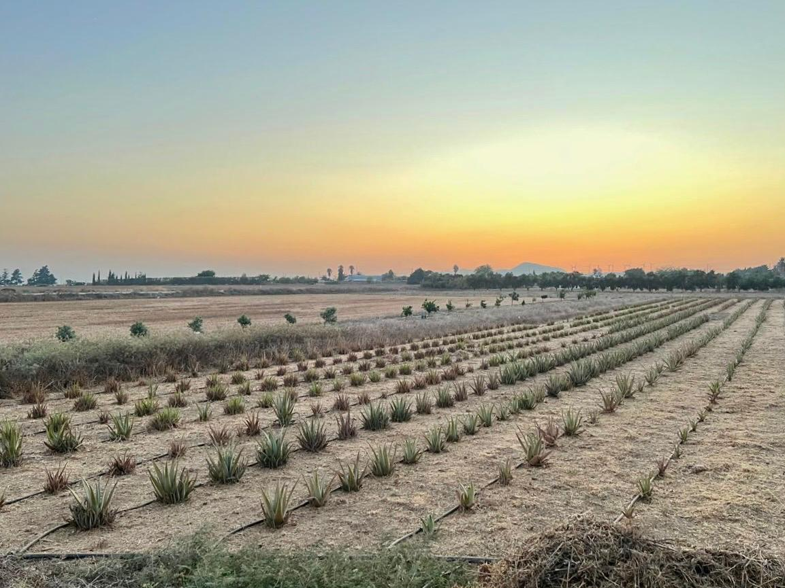
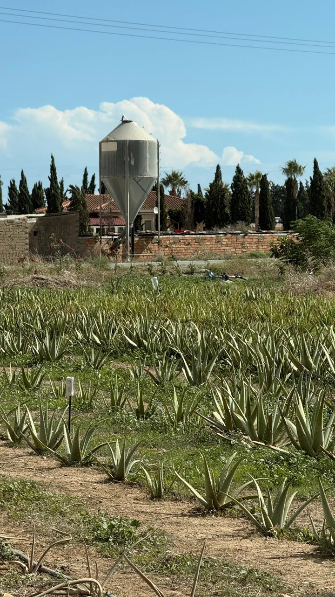
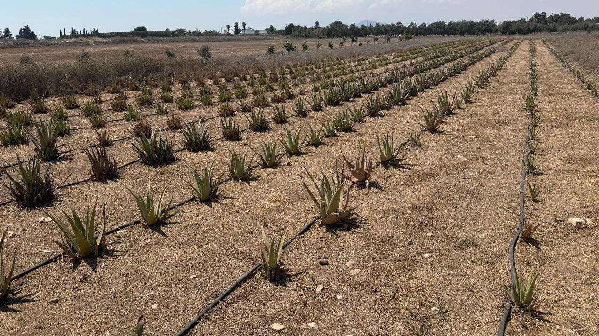

01 / CULTIVATION
Aloe Vera Production
Field-grown Aloe vera with an emphasis on crop management, traceability and plant quality.
Explore our fields ↗
From our Aloe vera fields to the future of botanical ingredients.
Discover agrologic ↗Agrologic is a Cyprus-based agricultural initiative focused on Aloe vera cultivation, agronomy and biotechnology-led innovation.
We combine practical field experience with scientific thinking to explore the value of responsibly grown Aloe vera for cosmetic and botanical applications.
Connect with us ↗
Our work starts in the field and extends toward new opportunities in plant-based innovation.

Field-grown Aloe vera with an emphasis on crop management, traceability and plant quality.
Explore our fields ↗
Applying agronomic expertise and a science-informed approach to sustainable agricultural development.
Discuss opportunities ↗
Exploring Aloe vera as a raw botanical material for cosmetic and personal-care formulation development.
Enquire about collaboration ↗Aloe vera leaf gel is valued in cosmetic formulations for its water-rich composition and skin-conditioning properties.
Water-rich gel helps support a moisturized skin feel when appropriately formulated.
Commonly used in products designed to comfort and condition skin.
Used to enhance the soft, smooth feel of cosmetic preparations.
Suitable for consideration in gels, creams, lotions and after-sun products.
Cosmetic applications shown are general ingredient uses, not claims of medical treatment. Product performance depends on formulation, processing and testing.
Thoughtful cultivation. Scientific curiosity. A long-term commitment to botanical innovation.
A closer look at our cultivation and production environment.
We welcome conversations with cosmetics professionals, formulators, distributors and agricultural partners.
Cyprus · Agricultural biotechnology & Aloe vera
Get in touch ↗